power transmission
transmit power from the motor/output shaft to the wheels.
designing a driveshaft to transmit motor power to the wheels while carrying the expected loads and integrating with the output shaft, support block, and wheel hub. the project emphasizes sound geometry, gd&t, and design for assembly.
the main requirements guiding the preliminary layout and analysis.
transmit power from the motor/output shaft to the wheels.
select geometry that can withstand the required forces and moments.
fit and function properly with the output shaft, support block, and wheel hub.
emphasize geometric dimensioning and tolerancing (gd&t) and design for assembly (dfa).
an early stepped-shaft layout showing the packaging and connection features to be developed.
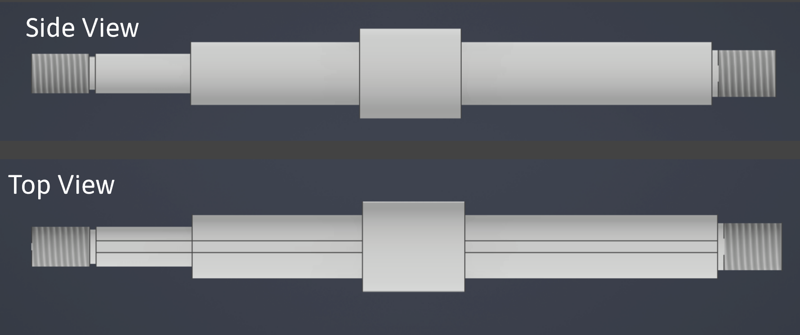
a first-pass free-body and bending-stress check to estimate the loads on the shaft.
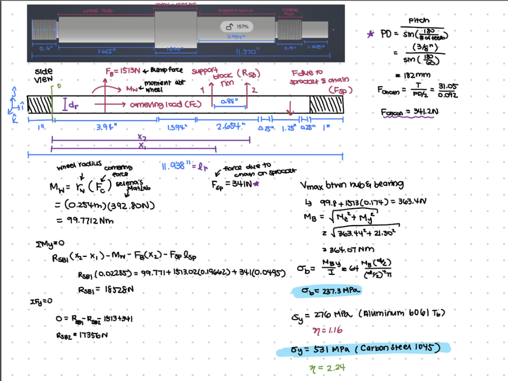
the shaft is approximated as a beam supported at the bearing/support locations. the free-body diagram includes a wheel bump force and a sprocket chain load, and the equations estimate the reactions at the supports.
the page estimates a wheel moment of about 99.8 n·m, a chain force of about 341 n, and a combined bending moment of about 364 n·m. from that bending estimate, the calculated bending stress is about 237 mpa.
the material comparison gives an approximate yield safety factor of 1.16 for 6061-t6 aluminum and 2.24 for 1045 carbon steel, using the yield strengths noted in the calculation.
these are preliminary estimates based on the shown assumptions and dimensions, not a final design validation. load cases, stress concentrations, fatigue, deflection, material condition, and the support/interface assumptions still need to be checked.
first-pass ANSYS static structural setups and deformation results. this initial approach was later revised to better represent how loads are shared through the drivetrain.
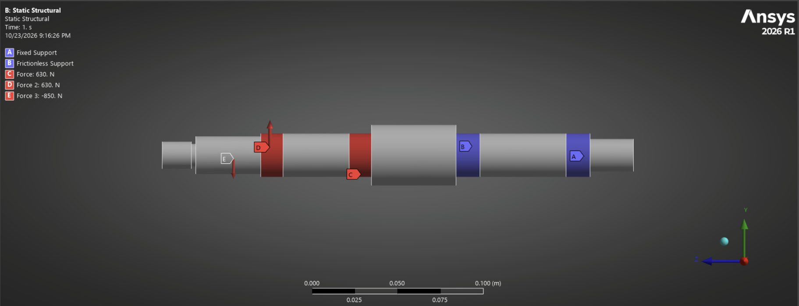
the first load case applies the expected reaction forces to the driveshaft. the one-way clutches are oriented toward the applied force and modeled as supports to represent how the system reacts at those interfaces.
the second high-load case was analyzed separately, using the same support approach: one-way clutches facing the load are constrained as supports, and the corresponding reaction forces are applied to the shaft system.
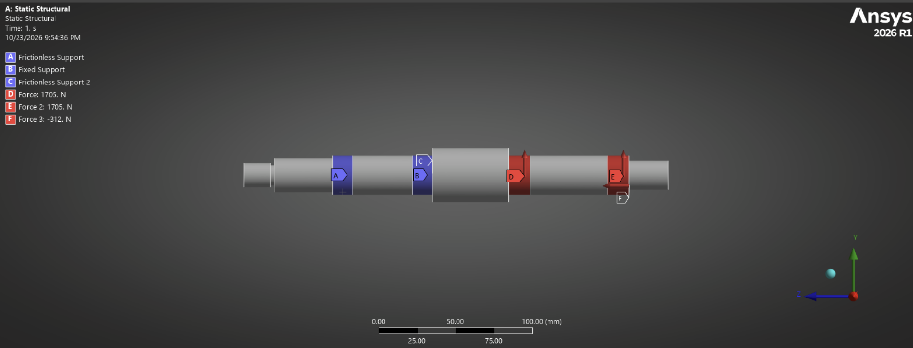
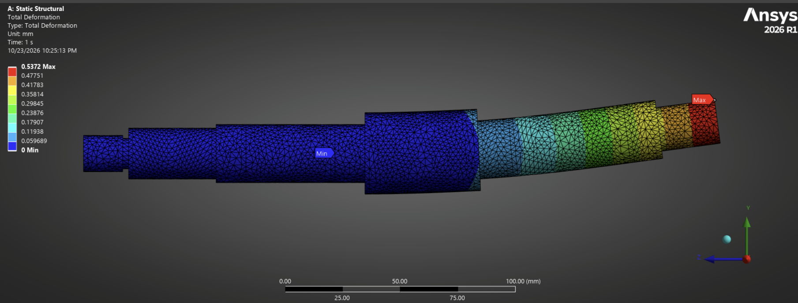
this first-pass bumping-and-cornering result showed a maximum total deformation of 0.5372 mm. although the factor of safety was favorable, angular deflection at the conical-bearing interfaces remained a concern. further review showed that this model assumed the conicals carried the full combined load at once, so a revised load-transfer method was needed for a more representative deflection estimate.
combined-load analysis, reaction-force transfer, and a material comparison helped evaluate bearing alignment under both conservative and representative load distributions.
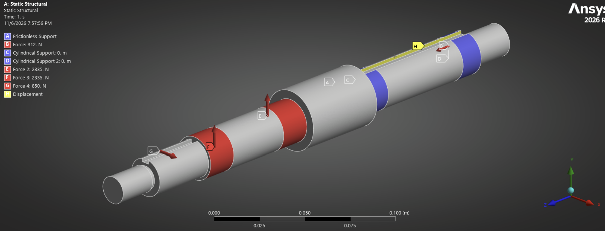
to improve on the separate initial cases, i combined the stall-torque and bumping-and-cornering loads in one model. after solving, i probed the one-way clutch reaction forces rather than assuming the conical bearings carried the entire combined load simultaneously.
i used the probed one-way reactions as inputs to a second, flipped setup: the one-way interfaces were constrained and their measured forces applied to the shaft. i then probed deformation at the conical-bearing locations to estimate relative angular deflection from the resulting displacement.
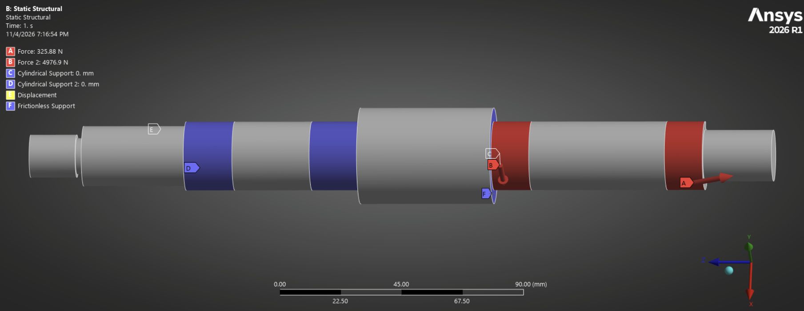
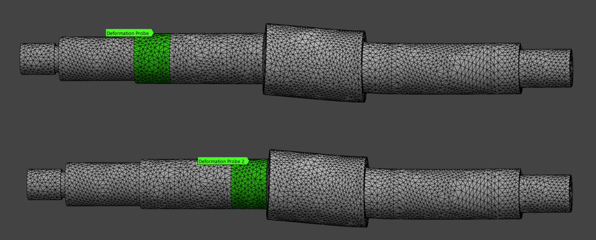
the paired probe locations capture displacement at the conical-bearing interfaces in the reaction-force model. comparing these locations focuses the assessment on relative movement and angular misalignment, rather than only the shaft's maximum total deformation.
i also modeled the bump load acting directly at the wheel. because the hub is symmetric, that load should be shared across the one-way clutches, and this case produced less angular deflection than the uneven reaction-force distribution. i retained the higher-deflection, uneven-load case as the conservative alignment check.
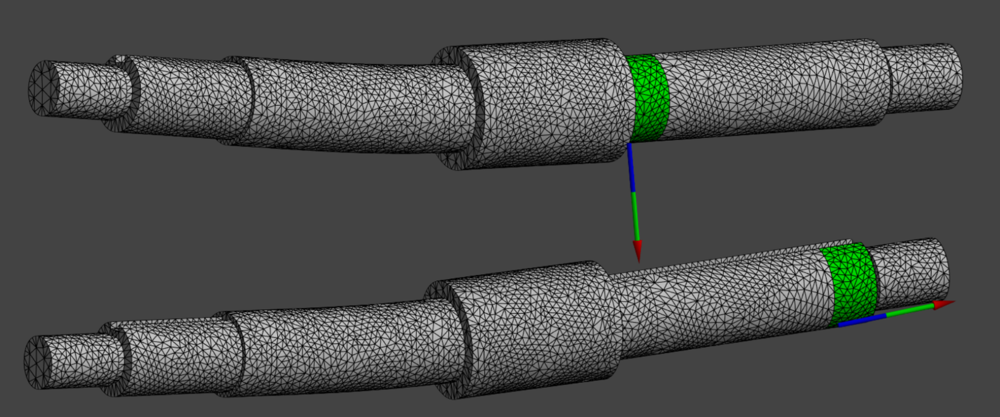
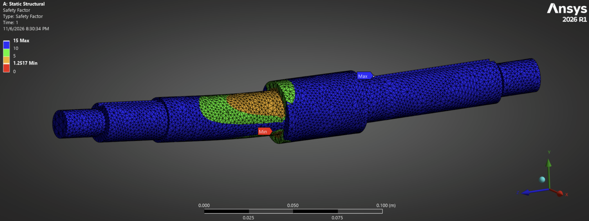
after confirming the 7075 design against the conservative deflection case and stress requirements, i evaluated 6061 aluminum as a lower-cost, lighter material. the 6061 model maintained acceptable bearing alignment and strength. its safety-factor plot shows a minimum of 1.2517; after reviewing the localized result, i determined it was not representative of a governing design concern and proceeded with the design.
how the driveshaft integrates with the UC '27 powertrain, wheel, and supporting structure.
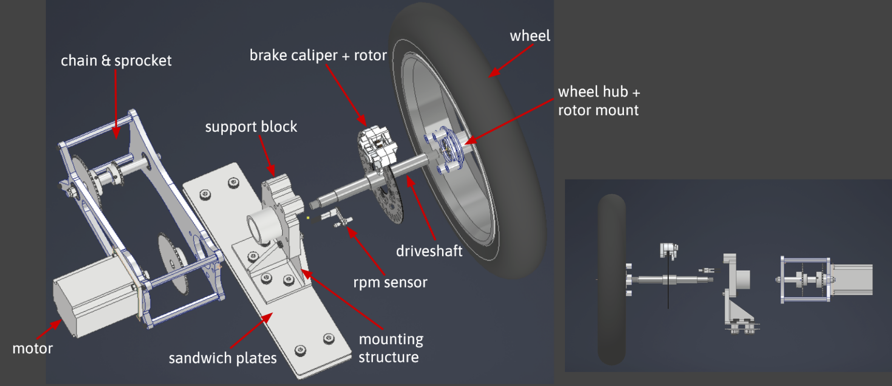